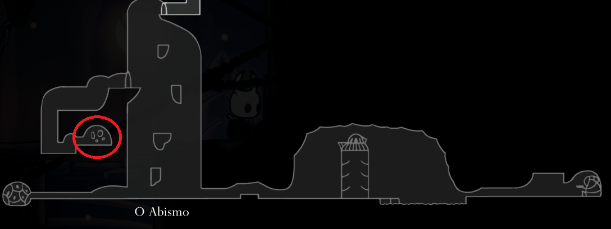

Contém um núcleo vivo que derrama sangue vital precioso. Ao descansar, o portador irá ganhar uma camada de Sangue Vital que lhe proteje de uma grande quantidade de dano.

Núcleo De Sangue Vital
Pode ser encontrado na esquerda do Abismo, tem uma porta enorme.
